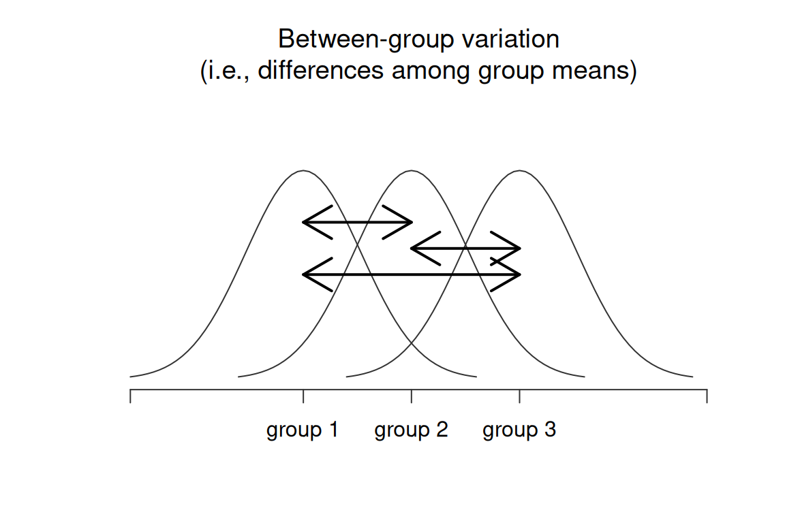
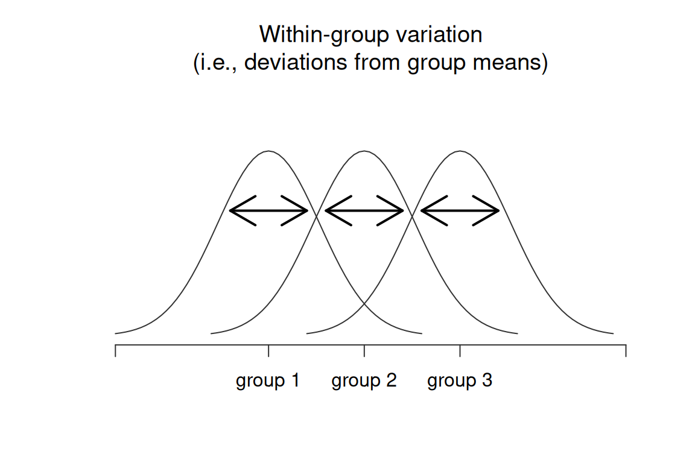
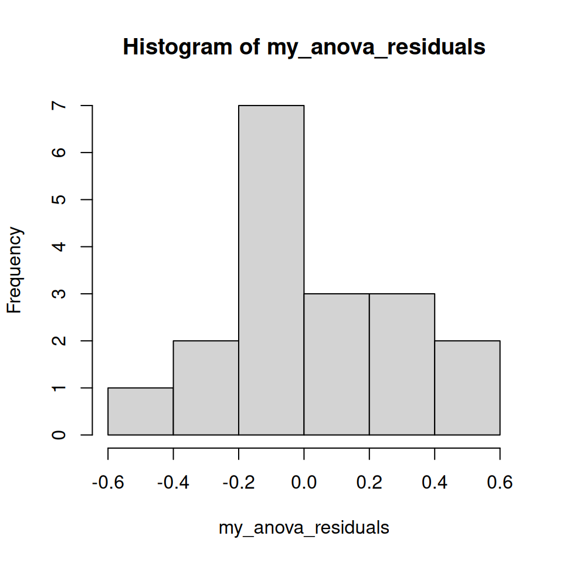
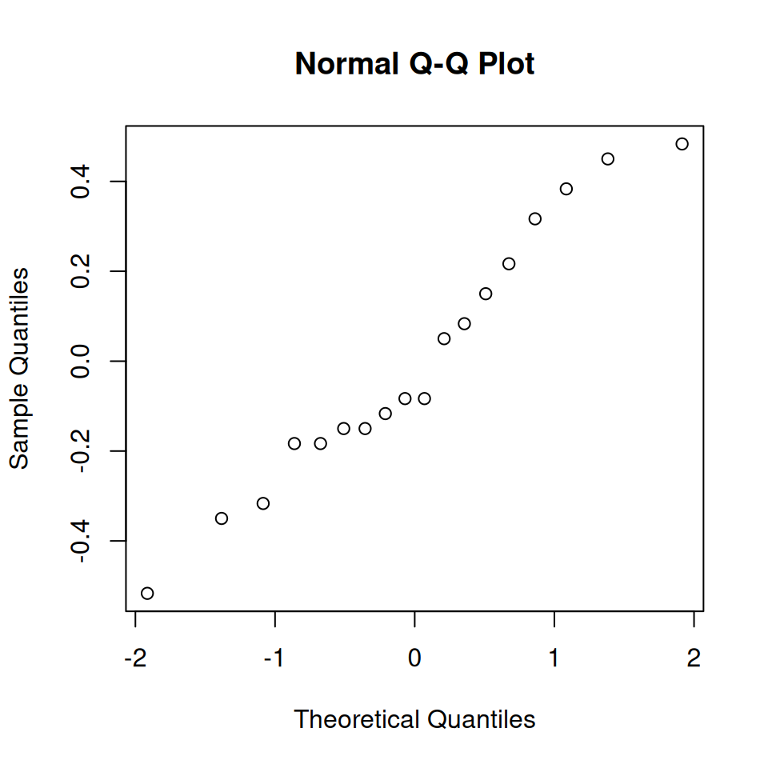

This chapter introduces one of the most widely used tools in statistics, known as “the analysis of variance”, which is usually referred to as ANOVA. The basic technique was developed by Sir Ronald Fisher in the early 20th century, and it is to him that we owe the rather unfortunate terminology. The term ANOVA is a little misleading, in two respects. Firstly, although the name of the technique refers to variances, ANOVA is concerned with investigating differences in means. Secondly, there are several different things out there that are all referred to as ANOVAs, some of which have only a very tenuous connection to one another. Later on in the book we’ll encounter a range of different ANOVA methods that apply in quite different situations, but for the purposes of this chapter we’ll only consider the simplest form of ANOVA, in which we have several different groups of observations, and we’re interested in finding out whether those groups differ in terms of some outcome variable of interest. This is the question that is addressed by a one-way ANOVA.
The structure of this chapter is as follows: In Section 14.1 I’ll introduce a fictitious data set that we’ll use as a running example throughout the chapter. After introducing the data, I’ll describe the mechanics of how a one-way ANOVA actually works (Section 14.2) and then focus on how you can run one in R (Section 14.3). These two sections are the core of the chapter. The remainder of the chapter discusses a range of important topics that inevitably arise when running an ANOVA, namely how to calculate effect sizes (Section 14.4), post hoc tests and corrections for multiple comparisons (Section 14.5) and the assumptions that ANOVA relies upon (Section 14.6). We’ll also talk about how to check those assumptions and some of the things you can do if the assumptions are violated (Section 14.7 to Section 14.10). At the end of the chapter we’ll talk a little about the relationship between ANOVA and other statistical tools (Section 14.11).
14.1 An illustrative data set
Suppose you’ve become involved in a clinical trial in which you are testing a new antidepressant drug called Joyzepam. In order to construct a fair test of the drug’s effectiveness, the study involves three separate drugs to be administered. One is a placebo, and the other is an existing antidepressant / anti-anxiety drug called Anxifree. A collection of 18 participants with moderate to severe depression are recruited for your initial testing. Because the drugs are sometimes administered in conjunction with psychological therapy, your study includes 9 people undergoing cognitive behavioural therapy (CBT) and 9 who are not. Participants are randomly assigned (doubly blinded, of course) a treatment, such that there are 3 CBT people and 3 no-therapy people assigned to each of the 3 drugs. A psychologist assesses the mood of each person after a 3 month run with each drug: and the overall improvement in each person’s mood is assessed on a scale ranging from \(-5\) to \(+5\).
With that as the study design, let’s now look at what we’ve got in the data file:
load("data/clinicaltrial.Rdata")who(expand =TRUE)
-- Name -- -- Class -- -- Size --
clin_trial data.frame 18 x 3
$drug factor 18
$therapy factor 18
$mood_gain numeric 18
So we have a single data frame called clin_trial, containing three variables: drug, therapy and mood_gain. Next, let’s print the data frame to get a sense of what the data actually look like.
For the purposes of this chapter, what we’re really interested in is the effect of drug on mood_gain. The first thing to do is calculate some descriptive statistics and draw some graphs. In Chapter 5 we discussed a variety of different functions that can be used for this purpose. For instance, we can use the xtabs() function to see how many people we have in each group:
xtabs(~drug, clin_trial)
drug
placebo anxifree joyzepam
6 6 6
Similarly, we can use the aggregate() function to calculate means and standard deviations for the mood_gain variable broken down by which drug was administered:
Figure 14.1: Average mood gain as a function of drug administered. Error bars depict 95% confidence intervals associated with each of the group means.
The results are shown in Figure 14.1, which plots the average mood gain for all three conditions; error bars show 95% confidence intervals. As the plot makes clear, there is a larger improvement in mood for participants in the Joyzepam group than for either the Anxifree group or the placebo group. The Anxifree group shows a larger mood gain than the control group, but the difference isn’t as large.
The question that we want to answer is: are these differences “real”, or are they just due to chance?
14.2 How ANOVA works
In order to answer the question posed by our clinical trial data, we’re going to run a one-way ANOVA. As usual, I’m going to start by showing you how to do it the hard way, building the statistical tool from the ground up and showing you how you could do it in R if you didn’t have access to any of the cool built-in ANOVA functions. And, as always, I hope you’ll read it carefully, try to do it the long way once or twice to make sure you really understand how ANOVA works, and then – once you’ve grasped the concept – never ever do it this way again.
The experimental design that I described in the previous section strongly suggests that we’re interested in comparing the average mood change for the three different drugs. In that sense, we’re talking about an analysis similar to the \(t\)-test (The \(t\)-test), but involving more than two groups. If we let \(\mu_P\) denote the population mean for the mood change induced by the placebo, and let \(\mu_A\) and \(\mu_J\) denote the corresponding means for our two drugs, Anxifree and Joyzepam, then the (somewhat pessimistic) null hypothesis that we want to test is that all three population means are identical: that is, neither of the two drugs is any more effective than a placebo. Mathematically, we write this null hypothesis like this: \[
\begin{array}{rcl}
H_0 &:& \mbox{it is true that } \mu_P = \mu_A = \mu_J
\end{array}
\] As a consequence, our alternative hypothesis is that at least one of the three different treatments is different from the others. It’s a little trickier to write this mathematically, because (as we’ll discuss) there are quite a few different ways in which the null hypothesis can be false. So for now we’ll just write the alternative hypothesis like this: \[
\begin{array}{rcl}
H_1 &:& \mbox{it is *not* true that } \mu_P = \mu_A = \mu_J
\end{array}
\] This null hypothesis is a lot trickier to test than any of the ones we’ve seen previously. How shall we do it? A sensible guess would be to “do an ANOVA”, since that’s the title of the chapter, but it’s not particularly clear why an “analysis of variances” will help us learn anything useful about the means. In fact, this is one of the biggest conceptual difficulties that people have when first encountering ANOVA. To see how this works, I find it most helpful to start by talking about variances. In fact, what I’m going to do is start by playing some mathematical games with the formula that describes the variance. That is, we’ll start out by playing around with variances, and it will turn out that this gives us a useful tool for investigating means.
14.2.1 Two formulas for the variance of \(Y\)
Firstly, let’s start by introducing some notation. We’ll use \(G\) to refer to the total number of groups. For our data set, there are three drugs, so there are \(G=3\) groups. Next, we’ll use \(N\) to refer to the total sample size: there are a total of \(N=18\) people in our data set. Similarly, let’s use \(N_k\) to denote the number of people in the \(k\)-th group. In our fake clinical trial, the sample size is \(N_k = 6\) for all three groups.1 Finally, we’ll use \(Y\) to denote the outcome variable: in our case, \(Y\) refers to mood change. Specifically, we’ll use \(Y_{ik}\) to refer to the mood change experienced by the \(i\)-th member of the \(k\)-th group. Similarly, we’ll use \(\bar{Y}\) to be the average mood change, taken across all 18 people in the experiment, and \(\bar{Y}_k\) to refer to the average mood change experienced by the 6 people in group \(k\).
1 When all groups have the same number of observations, the experimental design is said to be “balanced”. Balance isn’t such a big deal for one-way ANOVA, which is the topic of this chapter. It becomes more important when you start doing more complicated ANOVAs.
Excellent. Now that we’ve got our notation sorted out, we can start writing down formulas. To start with, let’s recall the formula for the variance that we used in Measures of variability, way back in those kinder days when we were just doing descriptive statistics. The sample variance of \(Y\) is defined as follows: \[
\mbox{Var}(Y) = \frac{1}{N} \sum_{k=1}^G \sum_{i=1}^{N_k} \left(Y_{ik} - \bar{Y} \right)^2
\] This formula looks pretty much identical to the formula for the variance in Measures of variability. The only difference is that this time around I’ve got two summations here: I’m summing over groups (i.e., values for \(k\)) and over the people within the groups (i.e., values for \(i\)). This is purely a cosmetic detail: if I’d instead used the notation \(Y_p\) to refer to the value of the outcome variable for person \(p\) in the sample, then I’d only have a single summation. The only reason that we have a double summation here is that I’ve classified people into groups, and then assigned numbers to people within groups.
A concrete example might be useful here. Let’s consider this table, in which we have a total of \(N=5\) people sorted into \(G=2\) groups. Arbitrarily, let’s say that the “cool” people are group 1, and the “uncool” people are group 2, and it turns out that we have three cool people (\(N_1 = 3\)) and two uncool people (\(N_2 = 2\)).
name
person \(p\)
group
group num. \(k\)
index in group \(i\)
grumpiness \(Y_{ik}\) or \(Y_p\)
Adelina
1
cool
1
1
20
Brijesh
2
cool
1
2
55
Cat
3
cool
1
3
21
Danielle
4
uncool
2
1
91
Ekaterina
5
uncool
2
2
22
Notice that I’ve constructed two different labelling schemes here. We have a “person” variable \(p\), so it would be perfectly sensible to refer to \(Y_p\) as the grumpiness of the \(p\)-th person in the sample. For instance, the table shows that Danielle is the fourth so we’d say \(p = 4\). So, when talking about the grumpiness \(Y\) of this “Danielle” person, whoever she might be, we could refer to her grumpiness by saying that \(Y_p = 91\), for person \(p = 4\) that is. However, that’s not the only way we could refer to Danielle. As an alternative we could note that Danielle belongs to the “uncool” group (\(k = 2\)), and is in fact the first person listed in the uncool group (\(i = 1\)). So it’s equally valid to refer to Danielle’s grumpiness by saying that \(Y_{ik} = 91\), where \(k = 2\) and \(i = 1\). In other words, each person \(p\) corresponds to a unique \(ik\) combination, and so the formula that I gave above is actually identical to our original formula for the variance, which would be \[
\mbox{Var}(Y) = \frac{1}{N} \sum_{p=1}^N \left(Y_{p} - \bar{Y} \right)^2
\] In both formulas, all we’re doing is summing over all of the observations in the sample. Most of the time we would just use the simpler \(Y_p\) notation: the equation using \(Y_p\) is clearly the simpler of the two. However, when doing an ANOVA it’s important to keep track of which participants belong in which groups, and we need to use the \(Y_{ik}\) notation to do this.
14.2.2 From variances to sums of squares
Okay, now that we’ve got a good grasp on how the variance is calculated, let’s define something called the total sum of squares, which is denoted SS\(_{tot}\). This is very simple: instead of averaging the squared deviations, which is what we do when calculating the variance, we just add them up. So the formula for the total sum of squares is almost identical to the formula for the variance: \[
\mbox{SS}_{tot} = \sum_{k=1}^G \sum_{i=1}^{N_k} \left(Y_{ik} - \bar{Y} \right)^2
\] When we talk about analysing variances in the context of ANOVA, what we’re really doing is working with the total sums of squares rather than the actual variance. One very nice thing about the total sum of squares is that we can break it up into two different kinds of variation. Firstly, we can talk about the within-group sum of squares, in which we look to see how different each individual person is from their own group mean: \[
\mbox{SS}_w = \sum_{k=1}^G \sum_{i=1}^{N_k} \left( Y_{ik} - \bar{Y}_k \right)^2
\] where \(\bar{Y}_k\) is a group mean. In our example, \(\bar{Y}_k\) would be the average mood change experienced by those people given the \(k\)-th drug. So, instead of comparing individuals to the average of all people in the experiment, we’re only comparing them to those people in the same group. As a consequence, you’d expect the value of \(\mbox{SS}_w\) to be smaller than the total sum of squares, because it’s completely ignoring any group differences – that is, the fact that the drugs (if they work) will have different effects on people’s moods.
Next, we can define a third notion of variation which captures only the differences between groups. We do this by looking at the differences between the group means \(\bar{Y}_k\) and grand mean \(\bar{Y}\). In order to quantify the extent of this variation, what we do is calculate the between-group sum of squares: \[
\begin{array}{rcl}
\mbox{SS}_{b} &=& \sum_{k=1}^G \sum_{i=1}^{N_k} \left( \bar{Y}_k - \bar{Y} \right)^2 \\
&=& \sum_{k=1}^G N_k \left( \bar{Y}_k - \bar{Y} \right)^2
\end{array}
\]
It’s not too difficult to show that the total variation among people in the experiment \(\mbox{SS}_{tot}\) is actually the sum of the differences between the groups \(\mbox{SS}_b\) and the variation inside the groups \(\mbox{SS}_w\). That is: \[
\mbox{SS}_w + \mbox{SS}_{b} = \mbox{SS}_{tot}
\] Yay.


Figure 14.2: Graphical illustration of “between groups” variation (panel a) and “within groups” variation (panel b). On the left, the arrows show the differences in the group means; on the right, the arrows highlight the variability within each group.
Okay, so what have we found out? We’ve discovered that the total variability associated with the outcome variable (\(\mbox{SS}_{tot}\)) can be mathematically carved up into the sum of “the variation due to the differences in the sample means for the different groups” (\(\mbox{SS}_{b}\)) plus “all the rest of the variation” (\(\mbox{SS}_{w}\)). How does that help me find out whether the groups have different population means? Um. Wait. Hold on a second… now that I think about it, this is exactly what we were looking for. If the null hypothesis is true, then you’d expect all the sample means to be pretty similar to each other, right? And that would imply that you’d expect \(\mbox{SS}_{b}\) to be really small, or at least you’d expect it to be a lot smaller than “the variation associated with everything else”, \(\mbox{SS}_{w}\). Hm. I detect a hypothesis test coming on…
14.2.3 From sums of squares to the \(F\)-test
As we saw in the last section, the qualitative idea behind ANOVA is to compare the two sums of squares values \(\mbox{SS}_b\) and \(\mbox{SS}_w\) to each other: if the between-group variation \(\mbox{SS}_b\) is large relative to the within-group variation \(\mbox{SS}_w\) then we have reason to suspect that the population means for the different groups aren’t identical to each other. In order to convert this into a workable hypothesis test, there’s a little bit of “fiddling around” needed. What I’ll do is first show you what we do to calculate our test statistic – which is called an \(F\) ratio – and then try to give you a feel for why we do it this way.
In order to convert our SS values into an \(F\)-ratio, the first thing we need to calculate is the degrees of freedom associated with the SS\(_b\) and SS\(_w\) values. As usual, the degrees of freedom corresponds to the number of unique “data points” that contribute to a particular calculation, minus the number of “constraints” that they need to satisfy. For the within-groups variability, what we’re calculating is the variation of the individual observations (\(N\) data points) around the group means (\(G\) constraints). In contrast, for the between-groups variability, we’re interested in the variation of the group means (\(G\) data points) around the grand mean (1 constraint). Therefore, the degrees of freedom here are: \[
\begin{array}{lcl}
\mbox{df}_b &=& G-1 \\
\mbox{df}_w &=& N-G \\
\end{array}
\] Okay, that seems simple enough. What we do next is convert our summed squares value into a “mean squares” value, which we do by dividing by the degrees of freedom: \[
\begin{array}{lcl}
\mbox{MS}_b &=& \displaystyle\frac{\mbox{SS}_b }{ \mbox{df}_b} \\[6pt]
\mbox{MS}_w &=& \displaystyle\frac{\mbox{SS}_w }{ \mbox{df}_w}
\end{array}
\] Finally, we calculate the \(F\)-ratio by dividing the between-groups MS by the within-groups MS: \[
F = \frac{\mbox{MS}_b }{ \mbox{MS}_w }
\] At a very general level, the intuition behind the \(F\) statistic is straightforward: bigger values of \(F\) mean that the between-groups variation is large, relative to the within-groups variation. As a consequence, the larger the value of \(F\), the more evidence we have against the null hypothesis. But how large does \(F\) have to be in order to actually reject\(H_0\)? In order to understand this, you need a slightly deeper understanding of what ANOVA is and what the mean squares values actually are.
The next section discusses that in a bit of detail, but for readers that aren’t interested in the details of what the test is actually measuring, I’ll cut to the chase. In order to complete our hypothesis test, we need to know the sampling distribution for \(F\) if the null hypothesis is true. Not surprisingly, the sampling distribution for the \(F\)statistic under the null hypothesis is an \(F\)distribution. If you recall back to our discussion of the \(F\) distribution in Introduction to probability, the \(F\) distribution has two parameters, corresponding to the two degrees of freedom involved: the first one df\(_1\) is the between-groups degrees of freedom df\(_b\), and the second one df\(_2\) is the within-groups degrees of freedom df\(_w\).
A summary of all the key quantities involved in a one-way ANOVA, including the formulas showing how they are calculated, is shown in Table 14.1.
Table 14.1: All of the key quantities involved in an ANOVA, organised into a “standard” ANOVA table. The formulas for all quantities (except the \(p\)-value, which has a very ugly formula and would be nightmarishly hard to calculate without a computer) are shown.
14.2.4 The model for the data and the meaning of \(F\)
At a fundamental level, ANOVA is a competition2 between two different statistical models, \(H_0\) and \(H_1\). When I described the null and alternative hypotheses at the start of the section, I was a little imprecise about what these models actually are. I’ll remedy that now, though you probably won’t like me for doing so. If you recall, our null hypothesis was that all of the group means are identical to one another. If so, then a natural way to think about the outcome variable \(Y_{ik}\) is to describe individual scores in terms of a single population mean \(\mu\), plus the deviation from that population mean. This deviation is usually denoted \(\epsilon_{ik}\) and is traditionally called the error or residual associated with that observation. Be careful though: just like we saw with the word “significant”, the word “error” has a technical meaning in statistics that isn’t quite the same as its everyday English definition. In everyday language, “error” implies a mistake of some kind; in statistics, it doesn’t (or at least, not necessarily). With that in mind, the word “residual” is a better term than the word “error”. In statistics, both words mean “leftover variability”: that is, “stuff” that the model can’t explain. In any case, here’s what the null hypothesis looks like when we write it as a statistical model: \[
Y_{ik} = \mu + \epsilon_{ik}
\] where we make the assumption (discussed later) that the residual values \(\epsilon_{ik}\) are normally distributed, with mean 0 and a standard deviation \(\sigma\) that is the same for all groups. To use the notation that we introduced in Introduction to probability we would write this assumption like this: \[
\epsilon_{ik} \sim \mbox{Normal}(0, \sigma^2)
\]
2 This section covers more advanced material that readers may wish to skip on a first pass through the chapter.
What about the alternative hypothesis, \(H_1\)? The only difference between the null hypothesis and the alternative hypothesis is that we allow each group to have a different population mean. So, if we let \(\mu_k\) denote the population mean for the \(k\)-th group in our experiment, then the statistical model corresponding to \(H_1\) is: \[
Y_{ik} = \mu_k + \epsilon_{ik}
\] where, once again, we assume that the error terms are normally distributed with mean 0 and standard deviation \(\sigma\). That is, the alternative hypothesis also assumes that \(\epsilon \sim \mbox{Normal}(0, \sigma^2)\).
Okay, now that we’ve described the statistical models underpinning \(H_0\) and \(H_1\) in more detail, it’s now pretty straightforward to say what the mean square values are measuring, and what this means for the interpretation of \(F\). I won’t bore you with the proof of this, but it turns out that the within-groups mean square, MS\(_w\), can be viewed as an estimator (in the technical sense: Estimating unknown quantities from a sample) of the error variance \(\sigma^2\). The between-groups mean square MS\(_b\) is also an estimator; but what it estimates is the error variance plus a quantity that depends on the true differences among the group means. If we call this quantity \(Q\), then we can see that the \(F\)-statistic is basically3\[
F = \frac{\hat{Q} + \hat\sigma^2}{\hat\sigma^2}
\] where the true value \(Q=0\) if the null hypothesis is true, and \(Q > 0\) if the alternative hypothesis is true (e.g., Hays, 1994, ch. 10). Therefore, at a bare minimum the \(F\) value must be larger than 1 to have any chance of rejecting the null hypothesis. Note that this doesn’t mean that it’s impossible to get an \(F\)-value less than 1. What it means is that, if the null hypothesis is true the sampling distribution of the \(F\) ratio has a mean of 1,4 and so we need to see \(F\)-values larger than 1 in order to safely reject the null.
3 I’ll just briefly note that if you read ahead to Factorial ANOVA and look at how the “treatment effect” at level \(k\) of a factor is defined in terms of the \(\alpha_k\) values, it turns out that \(Q\) refers to a weighted mean of the squared treatment effects, \(Q=(\sum_{k=1}^G N_k \alpha_k^2)/(G-1)\).
4 Or, if we want to be sticklers for accuracy, \(1 + \frac{2}{df_2 - 2}\).
To be a bit more precise about the sampling distribution, notice that if the null hypothesis is true, both MS\(_b\) and MS\(_w\) are estimators of the variance of the residuals \(\epsilon_{ik}\). If those residuals are normally distributed, then you might suspect that the estimate of the variance of \(\epsilon_{ik}\) is chi-square distributed… because (as discussed in Other useful distributions) that’s what a chi-square distribution is: it’s what you get when you square a bunch of normally-distributed things and add them up. And since the \(F\) distribution is (again, by definition) what you get when you take the ratio between two things that are \(\chi^2\) distributed… we have our sampling distribution. Obviously, I’m glossing over a whole lot of stuff when I say this, but in broad terms, this really is where our sampling distribution comes from.
14.2.5 A worked example
The previous discussion was fairly abstract, and a little on the technical side, so I think that at this point it might be useful to see a worked example. For that, let’s go back to the clinical trial data that I introduced at the start of the chapter. The descriptive statistics that we calculated at the beginning tell us our group means: an average mood gain of 0.45 for the placebo, 0.72 for Anxifree, and 1.48 for Joyzepam. With that in mind, let’s party like it’s 18995 and start doing some pencil and paper calculations. I’ll only do this for the first 5 observations, because it’s not bloody 1899 and I’m very lazy. Let’s start by calculating \(\mbox{SS}_{w}\), the within-group sums of squares. First, let’s draw up a nice table to help us with our calculations…
5 Or, to be precise, party like “it’s 1899 and we’ve got no friends and nothing better to do with our time than do some calculations that wouldn’t have made any sense in 1899 because ANOVA didn’t exist until about the 1920s”.
group \(k\)
outcome \(Y_{ik}\)
placebo
0.5
placebo
0.3
placebo
0.1
anxifree
0.6
anxifree
0.4
At this stage, the only thing I’ve included in the table is the raw data itself: that is, the grouping variable (i.e., drug) and outcome variable (i.e., mood_gain) for each person. Note that the outcome variable here corresponds to the \(Y_{ik}\) value in our equation previously. The next step in the calculation is to write down, for each person in the study, the corresponding group mean; that is, \(\bar{Y}_k\). This is slightly repetitive, but not particularly difficult since we already calculated those group means when doing our descriptive statistics:
group \(k\)
outcome \(Y_{ik}\)
group mean\(\bar{Y}_k\)
placebo
0.5
0.45
placebo
0.3
0.45
placebo
0.1
0.45
anxifree
0.6
0.72
anxifree
0.4
0.72
Now that we’ve written those down, we need to calculate – again for every person – the deviation from the corresponding group mean. That is, we want to subtract \(Y_{ik} - \bar{Y}_k\). After we’ve done that, we need to square everything. When we do that, here’s what we get:
group \(k\)
outcome \(Y_{ik}\)
group mean \(\bar{Y}_k\)
dev. from group mean\(Y_{ik} - \bar{Y}_{k}\)
squared deviation\((Y_{ik} - \bar{Y}_{k})^2\)
placebo
0.5
0.45
0.05
0.0025
placebo
0.3
0.45
-0.15
0.0225
placebo
0.1
0.45
-0.35
0.1225
anxifree
0.6
0.72
-0.12
0.0136
anxifree
0.4
0.72
-0.32
0.1003
The last step is equally straightforward. In order to calculate the within-group sum of squares, we just add up the squared deviations across all observations: \[
\begin{array}{rcl}
\mbox{SS}_w &=& 0.0025 + 0.0225 + 0.1225 + 0.0136 + 0.1003 \\
&=& 0.2614
\end{array}
\]
Of course, if we actually wanted to get the right answer, we’d need to do this for all 18 observations in the data set, not just the first five. We could continue with the pencil and paper calculations if we wanted to, but it’s pretty tedious. Alternatively, it’s not too hard to get R to do it. Here’s how:
It might not be obvious from inspection what these commands are doing: as a general rule, the human brain seems to just shut down when faced with a big block of programming. However, I strongly suggest that – if you’re like me and tend to find that the mere sight of this code makes you want to look away and see if there’s any beer left in the fridge or a game of footy on the telly – you take a moment and look closely at these commands one at a time. Every single one of these commands is something you’ve seen before somewhere else in the book. There’s nothing novel about them (though I’ll have to admit that the tapply() function takes a while to get a handle on), so if you’re not quite sure how these commands work, this might be a good time to try playing around with them yourself, to try to get a sense of what’s happening. On the other hand, if this does seem to make sense, then you won’t be all that surprised at what happens when I wrap these variables in a data frame, and print it out…
Y <-data.frame(group, outcome, gp_means, dev_from_gp_means, squared_devs)print(Y, digits =2)
If you compare this output to the contents of the table I’ve been constructing by hand, you can see that R has done exactly the same calculations that I was doing, and much faster too. So, if we want to finish the calculations of the within-group sum of squares in R, we just ask for the sum() of the squared_devs variable:
SSw <-sum(squared_devs)print(SSw)
[1] 1.391667
Obviously, this isn’t the same as what I calculated, because R used all 18 observations. But if I’d typed sum(squared_devs[1:5]) instead, it would have given the same answer that I got earlier.
Okay. Now that we’ve calculated the within-groups variation, \(\mbox{SS}_w\), it’s time to turn our attention to the between-group sum of squares, \(\mbox{SS}_b\). The calculations for this case are very similar. The main difference is that, instead of calculating the differences between an observation \(Y_{ik}\) and a group mean \(\bar{Y}_k\) for all of the observations, we calculate the differences between the group means \(\bar{Y}_k\) and the grand mean \(\bar{Y}\) (in this case 0.88) for all of the groups…
group \(k\)
group mean \(\bar{Y}_k\)
grand mean \(\bar{Y}\)
deviation \(\bar{Y}_{k} - \bar{Y}\)
squared deviation \((\bar{Y}_{k} - \bar{Y})^2\)
placebo
0.45
0.88
-0.43
0.18
anxifree
0.72
0.88
-0.16
0.03
joyzepam
1.48
0.88
0.60
0.36
However, for the between-group calculations we need to multiply each of these squared deviations by \(N_k\), the number of observations in the group. We do this because every observation in the group (all \(N_k\) of them) is associated with a between-group difference. So if there are six people in the placebo group, and the placebo group mean differs from the grand mean by 0.16, then the total between-group variation associated with these six people is \(6 \times 0.16 = 0.96\). So we have to extend our little table of calculations…
And so now our between-group sum of squares is obtained by summing these “weighted squared deviations” over all three groups in the study: \[
\begin{array}{rcl}
\mbox{SS}_{b} &=& 1.11 + 0.16 + 2.18 \\
&=& 3.45
\end{array}
\] As you can see, the between-group calculations are a lot shorter, so you probably wouldn’t usually want to bother using R as your calculator. However, if you did decide to do so, here’s one way you could do it:
Again, I won’t actually try to explain this code line by line, but – just like last time – there’s nothing in there that we haven’t seen in several places elsewhere in the book, so I’ll leave it as an exercise for you to make sure you understand it. Once again, we can dump all our variables into a data frame so that we can print it out as a nice table:
Y <-data.frame(gp_means, grand_mean, dev_from_grand_mean, squared_devs, gp_sizes, wt_squared_devs)print(Y, digits =2)
Clearly, these are basically the same numbers that we got before. There are a few tiny differences, but that’s only because the hand-calculated versions have some small errors caused by the fact that I rounded all my numbers to 2 decimal places at each step in the calculations, whereas R only does it at the end (obviously, R’s version is more accurate). Anyway, here’s the R command showing the final step:
SSb <-sum(wt_squared_devs)print(SSb)
[1] 3.453333
which is (ignoring the slight differences due to rounding error) the same answer that I got when doing things by hand.
Now that we’ve calculated our sums of squares values, \(\mbox{SS}_b\) and \(\mbox{SS}_w\), the rest of the ANOVA is pretty painless. The next step is to calculate the degrees of freedom. Since we have \(G = 3\) groups and \(N = 18\) observations in total, our degrees of freedom can be calculated by simple subtraction: \[
\begin{array}{lclcl}
\mbox{df}_b &=& G - 1 &=& 2 \\
\mbox{df}_w &=& N - G &=& 15
\end{array}
\] Next, since we’ve now calculated the values for the sums of squares and the degrees of freedom, for both the within-groups variability and the between-groups variability, we can obtain the mean square values by dividing one by the other: \[
\begin{array}{lclclcl}
\mbox{MS}_b &=& \displaystyle\frac{\mbox{SS}_b }{ \mbox{df}_b } &=& \displaystyle\frac{3.45}{ 2} &=& 1.73 \\[6pt]
\mbox{MS}_w &=& \displaystyle\frac{\mbox{SS}_w }{ \mbox{df}_w } &=& \displaystyle\frac{1.39}{15} &=& 0.09
\end{array}
\] We’re almost done. The mean square values can be used to calculate the \(F\)-value, which is the test statistic that we’re interested in. We do this by dividing the between-groups MS value by the within-groups MS value. \[
F \ = \ \frac{\mbox{MS}_b }{ \mbox{MS}_w } \ = \ \frac{1.73}{0.09} \ = \ 18.6
\] Woohooo! This is terribly exciting, yes? Now that we have our test statistic, the last step is to find out whether the test itself gives us a significant result. As discussed in Hypothesis testing, what we really ought to do is choose an \(\alpha\) level (i.e., acceptable Type I error rate) ahead of time, construct our rejection region, etc etc. But in practice it’s just easier to directly calculate the \(p\)-value. Back in the “old days”, what we’d do is open up a statistics textbook or something and flick to the back section which would actually have a huge lookup table… that’s how we’d “compute” our \(p\)-value, because it’s too much effort to do it any other way. However, since we have access to R, I’ll use the pf() function to do it instead. Now, remember that I explained earlier that the \(F\)-test is always one sided? And that we only reject the null hypothesis for very large \(F\)-values? That means we’re only interested in the upper tail of the \(F\)-distribution. The command that you’d use here would be this…
pf(18.6, df1 =2, df2 =15, lower.tail =FALSE)
[1] 8.672727e-05
Therefore, our \(p\)-value comes to 0.0000867, or \(8.67 \times 10^{-5}\) in scientific notation. So, unless we’re being extremely conservative about our Type I error rate, we’re pretty much guaranteed to reject the null hypothesis.
At this point, we’re basically done. Having completed our calculations, it’s traditional to organise all these numbers into an ANOVA table like the one in Table 14.1. For our clinical trial data, the ANOVA table would look like this:
df
sum of squares
mean squares
\(F\)-statistic
\(p\)-value
between groups
2
3.45
1.73
18.6
\(8.67 \times 10^{-5}\)
within groups
15
1.39
0.09
-
-
These days, you’ll probably never have much reason to want to construct one of these tables yourself, but you will find that almost all statistical software (R included) tends to organise the output of an ANOVA into a table like this, so it’s a good idea to get used to reading them. However, although the software will output a full ANOVA table, there’s almost never a good reason to include the whole table in your write up. A pretty standard way of reporting this result would be to write something like this:
One-way ANOVA showed a significant effect of drug on mood gain (\(F(2,15) = 18.6, p<.001\)).
Sigh. So much work for one short sentence.
14.3 Running an ANOVA in R
I’m pretty sure I know what you’re thinking after reading the last section, especially if you followed my advice and tried typing all the commands in yourself…. doing the ANOVA calculations yourself sucks. There’s quite a lot of calculations that we needed to do along the way, and it would be tedious to have to do this over and over again every time you wanted to do an ANOVA. One possible solution to the problem would be to take all these calculations and turn them into some R functions yourself. You’d still have to do a lot of typing, but at least you’d only have to do it the one time: once you’ve created the functions, you can reuse them over and over again. However, writing your own functions is a lot of work, so this is kind of a last resort. Besides, it’s much better if someone else does all the work for you…
14.3.1 Using the aov() function to specify your ANOVA
To make life easier for you, R provides a function called aov(), which – obviously – is an acronym of “Analysis Of Variance”.6 If you type ?aov and have a look at the help documentation, you’ll see that there are several arguments to the aov() function, but the only two that we’re interested in are formula and data. As we’ve seen in a few places previously, the formula argument is what you use to specify the outcome variable and the grouping variable, and the data argument is what you use to specify the data frame that stores these variables. In other words, to do the same ANOVA that I laboriously calculated in the previous section, I’d use a command like this:
6 Actually, it also provides a function called anova(), but that works a bit differently, so let’s just ignore it for now.
aov(formula = mood_gain ~ drug, data = clin_trial)
Actually, that’s not quite the whole story, as you’ll see as soon as you look at the output from this command, which I’ve hidden for the moment in order to avoid confusing you. Before we go into specifics, I should point out that either of these commands will do the same thing:
In the first command, I didn’t specify a data set, and instead relied on the $ operator to tell R how to find the variables. In the second command, I dropped the argument names, which is okay in this case because formula is the first argument to the aov() function, and data is the second one. Regardless of how I specify the ANOVA, I can assign the output of the aov() function to a variable, like this for example:
my_anova <-aov(mood_gain ~ drug, clin_trial)
This is almost always a good thing to do, because there’s lots of useful things that we can do with the my_anova variable. So let’s assume that it’s this last command that I used to specify the ANOVA that I’m trying to run, and as a consequence I have this my_anova variable sitting in my workspace, waiting for me to do something with it…
14.3.2 Understanding what the aov() function produces
Now that we’ve seen how to use the aov() function to create my_anova we’d better have a look at what this variable actually is. The first thing to do is to check to see what class of variable we’ve created, since it’s kind of interesting in this case. When we do that…
class(my_anova)
[1] "aov" "lm"
… we discover that my_anova actually has two classes! The first class tells us that it’s an aov (analysis of variance) object, but the second tells us that it’s also an lm (linear model) object. Later on, we’ll see that this reflects a pretty deep statistical relationship between ANOVA and regression (Linear regression) and it means that any function that exists in R for dealing with regressions can also be applied to aov objects, which is neat; but I’m getting ahead of myself. For now, I want to note that what we’ve created is an aov object, and to also make the point that aov objects are actually rather complicated beasts. I won’t be trying to explain everything about them, since it’s way beyond the scope of an introductory statistics subject, but to give you a tiny hint of some of the stuff that R stores inside an aov object, let’s ask it to print out the names() of all the stored quantities…
As we go through the rest of the book, I hope that a few of these will become a little more obvious to you, but right now that’s going to look pretty damned opaque. That’s okay. You don’t need to know any of the details about it right now, and most of it you don’t need at all… what you do need to understand is that the aov() function does a lot of calculations for you, not just the basic ones that I outlined in the previous sections. What this means is that it’s generally a good idea to create a variable like my_anova that stores the output of the aov() function… because later on, you can use my_anova as an input to lots of other functions: those other functions can pull out bits and pieces from the aov object, and calculate various other things that you might need.
Right then. The simplest thing you can do with an aov object is to print() it out. When we do that, it shows us a few of the key quantities of interest:
print(my_anova)
Call:
aov(formula = mood_gain ~ drug, data = clin_trial)
Terms:
drug Residuals
Sum of Squares 3.453333 1.391667
Deg. of Freedom 2 15
Residual standard error: 0.3045944
Estimated effects may be unbalanced
Specifically, it prints out a reminder of the command that you used when you called aov() in the first place, shows you the sums of squares values, the degrees of freedom, and a couple of other quantities that we’re not really interested in right now. Notice, however, that R doesn’t use the names “between-group” and “within-group”. Instead, it tries to assign more meaningful names: in our particular example, the between groups variance corresponds to the effect that the drug has on the outcome variable; and the within groups variance corresponds to the “leftover” variability, so it calls that the residuals. If we compare these numbers to the numbers that I calculated by hand in Section 14.2.5, you can see that they’re identical… the between groups sums of squares is \(\mbox{SS}_b = 3.45\), the within groups sums of squares is \(\mbox{SS}_w = 1.39\), and the degrees of freedom are 2 and 15 respectively.
14.3.3 Running the hypothesis tests for the ANOVA
Okay, so we’ve verified that my_anova seems to be storing a bunch of the numbers that we’re looking for, but the print() function didn’t quite give us the output that we really wanted. Where’s the \(F\)-value? The \(p\)-value? These are the most important numbers in our hypothesis test, but the print() function doesn’t provide them. To get those numbers, we need to use a different function. Instead of asking R to print() out the aov object, we should have asked for a summary() of it.7 When we do that…
7 It’s worth noting that you can get the same result by using the command anova(my_anova).
summary(my_anova)
Df Sum Sq Mean Sq F value Pr(>F)
drug 2 3.453 1.7267 18.61 8.65e-05 ***
Residuals 15 1.392 0.0928
---
Signif. codes: 0 '***' 0.001 '**' 0.01 '*' 0.05 '.' 0.1 ' ' 1
… we get all of the key numbers that we calculated earlier. We get the sums of squares, the degrees of freedom, the mean squares, the \(F\)-statistic, and the \(p\)-value itself. These are all identical to the numbers that we calculated ourselves when doing it the long and tedious way, and it’s even organised into the same kind of ANOVA table that I showed in Table 14.1, and then filled out by hand in Section 14.2.5. The only things that are even slightly different is that some of the row and column names are a bit different.
14.4 Effect size
There’s a few different ways you could measure the effect size in an ANOVA, but the most commonly used measures are \(\eta^2\) (eta squared) and partial \(\eta^2\). For a one way analysis of variance they’re identical to each other, so for the moment I’ll just explain \(\eta^2\). The definition of \(\eta^2\) is actually really simple: \[
\eta^2 = \frac{\mbox{SS}_b}{\mbox{SS}_{tot}}
\] That’s all it is. So when I look at the ANOVA table above, I see that \(\mbox{SS}_b = 3.45\) and \(\mbox{SS}_{tot} = 3.45 + 1.39 = 4.84\). Thus we get an \(\eta^2\) value of \[
\eta^2 = \frac{3.45}{4.84} = 0.71
\] The interpretation of \(\eta^2\) is equally straightforward: it refers to the proportion of the variability in the outcome variable (mood_gain) that can be explained in terms of the predictor (drug). A value of \(\eta^2 = 0\) means that there is no relationship at all between the two, whereas a value of \(\eta^2 = 1\) means that the relationship is perfect. Better yet, the \(\eta^2\) value is very closely related to a squared correlation (i.e., \(r^2\)). So, if you’re trying to figure out whether a particular value of \(\eta^2\) is big or small, it’s sometimes useful to remember that \[
\eta= \sqrt{\frac{\mbox{SS}_b}{\mbox{SS}_{tot}}}
\] can be interpreted as if it referred to the magnitude of a Pearson correlation. So in our drugs example, the \(\eta^2\) value of .71 corresponds to an \(\eta\) value of \(\sqrt{.71} = .84\). If we think about this as being equivalent to a correlation of about .84, we’d conclude that the relationship between drug and mood_gain is strong.
The core packages in R don’t include any functions for calculating \(\eta^2\). However, it’s pretty straightforward to calculate it directly from the numbers in the ANOVA table. In fact, since I’ve already got the SSw and SSb variables lying around from my earlier calculations, I can do this:
SStot <- SSb + SSw # total sums of squareseta_squared <- SSb / SStot # eta-squared valueprint(eta_squared)
[1] 0.7127623
However, since it can be tedious to do this the long way (especially when we start running more complicated ANOVAs, such as those in Factorial ANOVA) I’ve included an etaSquared() function in the lsr package which will do it for you. For now, the only argument you need to care about is x, which should be the aov object corresponding to your ANOVA. When we do this, what we get as output is this:
etaSquared(x = my_anova)
eta.sq eta.sq.part
drug 0.7127623 0.7127623
The output here shows two different numbers. The first one corresponds to the \(\eta^2\) statistic, precisely as described above. The second one refers to “partial \(\eta^2\)”, which is a somewhat different measure of effect size that I’ll describe later. For the simple ANOVA that we’ve just run, they’re the same number. But this won’t always be true once we start running more complicated ANOVAs.8
8 A potentially important footnote – I wrote the etaSquared() function for the lsr package as a teaching exercise, but like all the other functions in the lsr package it hasn’t been exhaustively tested. As of this writing – lsr package version 1.0.0 – there is at least one known bug in the code. In some cases at least, it doesn’t work (and can give very silly answers) when you set the weights on the observations to something other than uniform, filed upstream as djnavarro/lsr#30. That doesn’t matter at all for this book, since those kinds of analyses are well beyond the scope, but I haven’t had a chance to revisit the package in a long time; it would probably be wise to be very cautious with the use of this function in any context other than very simple introductory analyses. Thanks to Emil Kirkegaard for finding the bug! (Oh, and while I’m here, \(\eta^2\) itself is perhaps not the best measure of effect size for real world data analysis – it’s a biased estimator, and tends to overstate the true effect size, especially in small samples. Lakens (2013) makes the case for preferring \(\omega^2\) instead, and gives a practical rundown of how to calculate and report a range of effect sizes for \(t\)-tests and ANOVAs.)
14.5 Multiple comparisons and post hoc tests
Any time you run an ANOVA with more than two groups, and you end up with a significant effect, the first thing you’ll probably want to ask is which groups are actually different from one another. In our drugs example, our null hypothesis was that all three drugs (placebo, Anxifree and Joyzepam) have the exact same effect on mood. But if you think about it, the null hypothesis is actually claiming three different things all at once here. Specifically, it claims that:
Your competitor’s drug (Anxifree) is no better than a placebo (i.e., \(\mu_A = \mu_P\))
Your drug (Joyzepam) is no better than a placebo (i.e., \(\mu_J = \mu_P\))
Anxifree and Joyzepam are equally effective (i.e., \(\mu_J = \mu_A\))
If any one of those three claims is false, then the null hypothesis is also false. So, now that we’ve rejected our null hypothesis, we’re thinking that at least one of those things isn’t true. But which ones? All three of these propositions are of interest: you certainly want to know if your new drug Joyzepam is better than a placebo, and it would be nice to know how well it stacks up against an existing commercial alternative (i.e., Anxifree). It would even be useful to check the performance of Anxifree against the placebo: even if Anxifree has already been extensively tested against placebos by other researchers, it can still be very useful to check that your study is producing similar results to earlier work.
When we characterise the null hypothesis in terms of these three distinct propositions, it becomes clear that there are eight possible “states of the world” that we need to distinguish between:
possibility
is \(\mu_P = \mu_A\)?
is \(\mu_P = \mu_J\)?
is \(\mu_A = \mu_J\)?
which hypothesis?
1
✓
✓
✓
null
2
✓
✓
alternative
3
✓
✓
alternative
4
✓
alternative
5
✓
✓
alternative
6
✓
alternative
7
✓
alternative
8
alternative
By rejecting the null hypothesis, we’ve decided that we don’t believe that #1 is the true state of the world. The next question to ask is, which of the other seven possibilities do we think is right? When faced with this situation, it usually helps to look at the data. For instance, if we look at the plots in Figure 14.1, it’s tempting to conclude that Joyzepam is better than the placebo and better than Anxifree, but there’s no real difference between Anxifree and the placebo. However, if we want to get a clearer answer about this, it might help to run some tests.
14.5.1 Running “pairwise” \(t\)-tests
How might we go about solving our problem? Given that we’ve got three separate pairs of means (placebo versus Anxifree, placebo versus Joyzepam, and Anxifree versus Joyzepam) to compare, what we could do is run three separate \(t\)-tests and see what happens. There’s a couple of ways that we could do this. One method would be to construct new variables corresponding to the groups you want to compare (e.g., anxifree, placebo and joyzepam), and then run a \(t\)-test on these new variables:
or, you could use the subset argument in the t.test() function to select only those observations corresponding to one of the two groups we’re interested in:
See Pragmatic matters if you’ve forgotten how the %in% operator works. Regardless of which version we do, R will print out the results of the \(t\)-test, though I haven’t included that output here. If we go on to do this for all possible pairs of variables, we can look to see which (if any) pairs of groups are significantly different to each other. This “lots of \(t\)-tests idea” isn’t a bad strategy, though as we’ll see later on there are some problems with it. However, for the moment our bigger problem is that it’s a pain to have to type in such a long command over and over again: for instance, if your experiment has 10 groups, then you have to run 45 \(t\)-tests. That’s way too much typing.
To help keep the typing to a minimum, R provides a function called pairwise.t.test() that automatically runs all of the \(t\)-tests for you. There are three arguments that you need to specify, the outcome variable x, the group variable g, and the p.adjust.method argument, which “adjusts” the \(p\)-value in one way or another. I’ll explain \(p\)-value adjustment in a moment, but for now we can just set p.adjust.method = "none" since we’re not doing any adjustments. For our example, here’s what we do:
pairwise.t.test(x = clin_trial$mood_gain, # outcome variableg = clin_trial$drug, # grouping variablep.adjust.method ="none"# which correction to use?)
Pairwise comparisons using t tests with pooled SD
data: clin_trial$mood_gain and clin_trial$drug
placebo anxifree
anxifree 0.15021 -
joyzepam 3e-05 0.00056
P value adjustment method: none
One thing that bugs me slightly about the pairwise.t.test() function is that you can’t just give it an aov object, and have it produce this output. After all, I went to all that trouble earlier of getting R to create the my_anova variable and – as we saw in Section 14.3.2 – R has actually stored enough information inside it that I should just be able to get it to run all the pairwise tests using my_anova as an input. To that end, I’ve included a posthocPairwiseT() function in the lsr package that lets you do this. The idea behind this function is that you can just input the aov object itself,9 and then get the pairwise tests as an output. As of the current writing, posthocPairwiseT() is actually just a simple way of calling the pairwise.t.test() function, but you should be aware that I intend to make some changes to it later on. Here’s an example:
9 I should point out that there are other functions in R for running multiple comparisons, and at least one of them works this way: the TukeyHSD() function takes an aov object as its input, and outputs Tukey’s “honestly significant difference” tests. I talk about Tukey’s HSD in Factorial ANOVA.
Pairwise comparisons using t tests with pooled SD
data: mood_gain and drug
placebo anxifree
anxifree 0.15021 -
joyzepam 3e-05 0.00056
P value adjustment method: none
In later versions, I plan to add more functionality (e.g., adjusted confidence intervals), but for now I think it’s at least kind of useful. To see why, let’s suppose you’ve run your ANOVA and stored the results in my_anova, and you’re happy using the Holm correction (the default method in pairwise.t.test(), which I’ll explain in a moment). In that case, all you have to do is type this:
posthocPairwiseT(my_anova)
and R will output the test results. Much more convenient, I think.
14.5.2 Corrections for multiple testing
In the previous section I hinted that there’s a problem with just running lots and lots of \(t\)-tests. The concern is that when running these analyses, what we’re doing is going on a “fishing expedition”: we’re running lots and lots of tests without much theoretical guidance, in the hope that some of them come up significant. This kind of theory-free search for group differences is referred to as post hoc analysis (“post hoc” being Latin for “after this”).10
10 If you do have some theoretical basis for wanting to investigate some comparisons but not others, it’s a different story. In those circumstances you’re not really running “post hoc” analyses at all: you’re making “planned comparisons”. I do talk about this situation later in the book (Factorial ANOVA), but for now I want to keep things simple.
It’s okay to run post hoc analyses, but a lot of care is required. For instance, the analysis that I ran in the previous section is actually pretty dangerous: each individual\(t\)-test is designed to have a 5% Type I error rate (i.e., \(\alpha = .05\)), and I ran three of these tests. Imagine what would have happened if my ANOVA involved 10 different groups, and I had decided to run 45 “post hoc” \(t\)-tests to try to find out which ones were significantly different from each other: you’d expect 2 or 3 of them to come up significant by chance alone. As we saw in Hypothesis testing, the central organising principle behind null hypothesis testing is that we seek to control our Type I error rate, but now that I’m running lots of \(t\)-tests at once, in order to determine the source of my ANOVA results, my actual Type I error rate across this whole family of tests has gotten completely out of control.
The usual solution to this problem is to introduce an adjustment to the \(p\)-value, which aims to control the total error rate across the family of tests (see Shaffer, 1995). An adjustment of this form, which is usually (but not always) applied because one is doing post hoc analysis, is often referred to as a correction for multiple comparisons, though it is sometimes referred to as “simultaneous inference”. In any case, there are quite a few different ways of doing this adjustment. I’ll discuss a few of them in this section and in Factorial ANOVA, but you should be aware that there are many other methods out there (see, e.g., Hsu, 1996).
14.5.3 Bonferroni corrections
The simplest of these adjustments is called the Bonferroni correction(Dunn, 1961), and it’s very very simple indeed. Suppose that my post hoc analysis consists of \(m\) separate tests, and I want to ensure that the total probability of making any Type I errors at all is at most \(\alpha\).11 If so, then the Bonferroni correction just says “multiply all your raw \(p\)-values by \(m\)”. If we let \(p\) denote the original \(p\)-value, and let \(p^\prime\) be the corrected value, then the Bonferroni correction tells that: \[
p^\prime = m \times p
\] And therefore, if you’re using the Bonferroni correction, you would reject the null hypothesis if \(p^\prime < \alpha\). The logic behind this correction is very straightforward. We’re doing \(m\) different tests; so if we arrange it so that each test has a Type I error rate of at most \(\alpha / m\), then the total Type I error rate across these tests cannot be larger than \(\alpha\). That’s pretty simple, so much so that in the original paper, the author writes:
11 It’s worth noting in passing that not all adjustment methods try to do this. What I’ve described here is an approach for controlling “family wise Type I error rate”. However, there are other post hoc tests that seek to control the “false discovery rate” (Benjamini & Hochberg, 1995), which is a somewhat different thing.
The method given here is so simple and so general that I am sure it must have been used before this. I do not find it, however, so can only conclude that perhaps its very simplicity has kept statisticians from realizing that it is a very good method in some situations (Dunn, 1961, pp. 52–53)
To use the Bonferroni correction in R, you can use the pairwise.t.test() function,12 making sure that you set p.adjust.method = "bonferroni". Alternatively, since the whole reason why we’re doing these pairwise tests in the first place is because we have an ANOVA that we’re trying to understand, it’s probably more convenient to use the posthocPairwiseT() function in the lsr package, since we can use my_anova as the input:
12 There’s also a function called p.adjust() in which you can input a vector of raw \(p\)-values, and it will output a vector of adjusted \(p\)-values. This can be handy sometimes. I should also note that more advanced users may wish to consider using some of the tools provided by the multcomp package.
Pairwise comparisons using t tests with pooled SD
data: mood_gain and drug
placebo anxifree
anxifree 0.4506 -
joyzepam 9.1e-05 0.0017
P value adjustment method: bonferroni
If we compare these three \(p\)-values to those that we saw in the previous section when we made no adjustment at all, it is clear that the only thing that R has done is multiply them by 3.
14.5.4 Holm corrections
Although the Bonferroni correction is the simplest adjustment out there, it’s not usually the best one to use. One method that is often used instead is the Holm correction(Holm, 1979). The idea behind the Holm correction is to pretend that you’re doing the tests sequentially; starting with the smallest (raw) \(p\)-value and moving onto the largest one. For the \(j\)-th largest of the \(p\)-values, the adjustment is either\[
p^\prime_j = j \times p_j
\] (i.e., the biggest \(p\)-value remains unchanged, the second biggest \(p\)-value is doubled, the third biggest \(p\)-value is tripled, and so on), or\[
p^\prime_j = p^\prime_{j+1}
\] whichever one is larger. This might sound a little confusing, so let’s go through it a little more slowly. Here’s what the Holm correction does. First, you sort all of your \(p\)-values in order, from smallest to largest. For the smallest \(p\)-value all you do is multiply it by \(m\), and you’re done. However, for all the other ones it’s a two-stage process. For instance, when you move to the second smallest \(p\) value, you first multiply it by \(m-1\). If this produces a number that is bigger than the adjusted \(p\)-value that you got last time, then you keep it. But if it’s smaller than the last one, then you copy the last \(p\)-value. To illustrate how this works, consider the table below, which shows the calculations of a Holm correction for a collection of five \(p\)-values:
raw \(p\)
rank \(j\)
\(p \times j\)
Holm \(p\)
.001
5
.005
.005
.005
4
.020
.020
.019
3
.057
.057
.022
2
.044
.057
.103
1
.103
.103
Hopefully that makes things clear.
Although it’s a little harder to calculate, the Holm correction has some very nice properties: it’s more powerful than Bonferroni (i.e., it has a lower Type II error rate), but – counterintuitive as it might seem – it has the same Type I error rate. As a consequence, in practice there’s never any reason to use the simpler Bonferroni correction, since it is always outperformed by the slightly more elaborate Holm correction. Because of this, the Holm correction is the default one used by pairwise.t.test() and posthocPairwiseT(). To run the Holm correction in R, you could specify p.adjust.method = "Holm" if you wanted to, but since it’s the default you can just do this:
posthocPairwiseT(my_anova)
Pairwise comparisons using t tests with pooled SD
data: mood_gain and drug
placebo anxifree
anxifree 0.1502 -
joyzepam 9.1e-05 0.0011
P value adjustment method: holm
As you can see, the biggest \(p\)-value (corresponding to the comparison between Anxifree and the placebo) is unaltered: at a value of \(.15\), it is exactly the same as the value we got originally when we applied no correction at all. In contrast, the smallest \(p\)-value (Joyzepam versus placebo) has been multiplied by three.
14.5.5 Writing up the post hoc test
Finally, having run the post hoc analysis to determine which groups are significantly different to one another, you might write up the result like this:
Post hoc tests (using the Holm correction to adjust \(p\)) indicated that Joyzepam produced a significantly larger mood change than both Anxifree (\(p = .001\)) and the placebo (\(p = 9.1 \times 10^{-5}\)). We found no evidence that Anxifree performed better than the placebo (\(p = .15\)).
Or, if you don’t like the idea of reporting exact \(p\)-values, then you’d change those numbers to \(p<.01\), \(p<.001\) and \(p > .05\) respectively. Either way, the key thing is that you indicate that you used Holm’s correction to adjust the \(p\)-values. And of course, I’m assuming that elsewhere in the write up you’ve included the relevant descriptive statistics (i.e., the group means and standard deviations), since these \(p\)-values on their own aren’t terribly informative.
14.6 Assumptions of one-way ANOVA
Like any statistical test, analysis of variance relies on some assumptions about the data. There are three key assumptions that you need to be aware of: normality, homogeneity of variance and independence. If you remember back to Section 14.2.4 – which I hope you at least skimmed even if you didn’t read the whole thing – I described the statistical models underpinning ANOVA, which I wrote down like this: \[
\begin{array}{lrcl}
H_0: \quad & Y_{ik} &=& \mu + \epsilon_{ik} \\
H_1: & Y_{ik} &=& \mu_k + \epsilon_{ik}
\end{array}
\] In these equations \(\mu\) refers to a single, grand population mean which is the same for all groups, and \(\mu_k\) is the population mean for the \(k\)-th group. Up to this point we’ve been mostly interested in whether our data are best described in terms of a single grand mean (the null hypothesis) or in terms of different group-specific means (the alternative hypothesis). This makes sense, of course: that’s actually the important research question! However, all of our testing procedures have – implicitly – relied on a specific assumption about the residuals, \(\epsilon_{ik}\), namely that \[
\epsilon_{ik} \sim \mbox{Normal}(0, \sigma^2)
\] None of the maths works properly without this bit. Or, to be precise, you can still do all the calculations, and you’ll end up with an \(F\)-statistic, but you have no guarantee that this \(F\)-statistic actually measures what you think it’s measuring, and so any conclusions that you might draw on the basis of the \(F\) test might be wrong.
So, how do we check whether this assumption about the residuals is accurate? Well, as I indicated above, there are three distinct claims buried in this one statement, and we’ll consider them separately.
Normality. The residuals are assumed to be normally distributed. As we saw in The one-sample \(t\)-test, we can assess this by looking at QQ plots or running a Shapiro-Wilk test. I’ll talk about this in an ANOVA context in Section 14.9.
Homogeneity of variance. Notice that we’ve only got the one value for the population standard deviation (i.e., \(\sigma\)), rather than allowing each group to have its own value (i.e., \(\sigma_k\)). This is referred to as the homogeneity of variance (sometimes called homoscedasticity) assumption. ANOVA assumes that the population standard deviation is the same for all groups. We’ll talk about this extensively in Section 14.7.
Independence. The independence assumption is a little trickier. What it basically means is that, knowing one residual tells you nothing about any other residual. All of the \(\epsilon_{ik}\) values are assumed to have been generated without any “regard for” or “relationship to” any of the other ones. There’s not an obvious or simple way to test for this, but there are some situations that are clear violations of this: for instance, if you have a repeated-measures design, where each participant in your study appears in more than one condition, then independence doesn’t hold; there’s a special relationship between some observations… namely those that correspond to the same person! When that happens, you need to use something like repeated measures ANOVA, which isn’t covered in this book.
14.6.1 How robust is ANOVA?
One question that people often want to know the answer to is the extent to which you can trust the results of an ANOVA if the assumptions are violated. Or, to use the technical language, how robust is ANOVA to violations of the assumptions. As a rule of thumb, the \(F\)-test is fairly forgiving of departures from normality – much like the sampling distributions discussed in Section 10.3.3, it tends to behave reasonably well thanks to the central limit theorem, particularly as sample size grows – but it’s considerably more sensitive to violations of the homogeneity of variance assumption, especially when the groups have unequal sample sizes. That sensitivity is part of the reason Section 14.8 exists. A full, careful treatment of ANOVA’s robustness properties is beyond the scope of this book.
14.7 Checking the homogeneity of variance assumption
There’s more than one way to skin a cat, as the saying goes, and more than one way to test the homogeneity of variance assumption, too (though for some reason no-one made a saying out of that). The most commonly used test for this that I’ve seen in the literature is the Levene test(Levene, 1960), and the closely related Brown-Forsythe test(Brown & Forsythe, 1974), both of which I’ll describe here. Alternatively, you could use the Bartlett test, which is implemented in R via the bartlett.test() function, but I’ll leave it as an exercise for the reader to go check that one out if you’re interested.
Levene’s test is shockingly simple. Suppose we have our outcome variable \(Y_{ik}\). All we do is define a new variable, which I’ll call \(Z_{ik}\), corresponding to the absolute deviation from the group mean: \[
Z_{ik} = \left| Y_{ik} - \bar{Y}_k \right|
\] Okay, what good does this do us? Well, let’s take a moment to think about what \(Z_{ik}\) actually is, and what we’re trying to test. The value of \(Z_{ik}\) is a measure of how the \(i\)-th observation in the \(k\)-th group deviates from its group mean. And our null hypothesis is that all groups have the same variance; that is, the same overall deviations from the group means! So, the null hypothesis in a Levene’s test is that the population means of \(Z\) are identical for all groups. Hm. So what we need now is a statistical test of the null hypothesis that all group means are identical. Where have we seen that before? Oh right, that’s what ANOVA is… and so all that the Levene’s test does is run an ANOVA on the new variable \(Z_{ik}\).
What about the Brown-Forsythe test? Does that do anything particularly different? Nope. The only change from the Levene’s test is that it constructs the transformed variable \(Z\) in a slightly different way, using deviations from the group medians rather than deviations from the group means. That is, for the Brown-Forsythe test, \[
Z_{ik} = \left| Y_{ik} - \mbox{median}_k(Y) \right|
\] where \(\mbox{median}_k(Y)\) is the median for group \(k\). Regardless of whether you’re doing the standard Levene test or the Brown-Forsythe test, the test statistic – which is sometimes denoted \(F\), but sometimes written as \(W\) – is calculated in exactly the same way that the \(F\)-statistic for the regular ANOVA is calculated, just using \(Z_{ik}\) rather than \(Y_{ik}\). With that in mind, let’s just move on and look at how to run the test in R.
14.7.1 Running the Levene’s test in R
Okay, so how do we run the Levene test? Obviously, since the Levene test is just an ANOVA, it would be easy enough to manually create the transformed variable \(Z_{ik}\) and then use the aov() function to run an ANOVA on that. However, that’s the tedious way to do it. A better way to run your Levene’s test is to use the leveneTest() function, which is in the car package. As usual, we first load the package
library(car)
and now that we have, we can run our Levene test. The main argument that you need to specify is y, but you can do this in lots of different ways. Probably the simplest way to do it is actually to input the original aov object. Since I’ve got the my_anova variable stored from my original ANOVA, I can just do this:
leveneTest(my_anova)
Levene's Test for Homogeneity of Variance (center = median)
Df F value Pr(>F)
group 2 1.4672 0.2618
15
If we look at the output, we see that the test is non-significant \((F_{2,15} = 1.47, p = .26)\), so it looks like the homogeneity of variance assumption is fine. Remember, although R reports the test statistic as an \(F\)-value, it could equally be called \(W\), in which case you’d just write \(W_{2,15} = 1.47\). Also, note the part of the output that says center = median. That’s telling you that, by default, the leveneTest() function actually does the Brown-Forsythe test. If you want to use the mean instead, then you need to explicitly set the center argument, like this:
leveneTest(y = my_anova, center = mean)
Levene's Test for Homogeneity of Variance (center = mean)
Df F value Pr(>F)
group 2 1.4497 0.2657
15
That being said, in most cases it’s probably best to stick to the default value, since the Brown-Forsythe test is a bit more robust than the original Levene test.
14.7.2 Additional comments
Two more quick comments before I move onto a different topic. Firstly, as mentioned above, there are other ways of calling the leveneTest() function. Although the vast majority of situations that call for a Levene test involve checking the assumptions of an ANOVA (in which case you probably have a variable like my_anova lying around), sometimes you might find yourself wanting to specify the variables directly. Two different ways that you can do this are shown below:
leveneTest(y = mood_gain ~ drug, data = clin_trial) # y is a formula in this caseleveneTest(y = clin_trial$mood_gain, group = clin_trial$drug) # y is the outcome
Secondly, I did mention that it’s possible to run a Levene test just using the aov() function. I don’t want to waste a lot of space on this, but just in case some readers are interested in seeing how this is done, here’s the code that creates the new variables and runs an ANOVA. If you are interested, feel free to run this to verify that it produces the same answers as the Levene test (i.e., with center = mean):
Y <- clin_trial$mood_gain # the original outcome variable, YG <- clin_trial$drug # the grouping variable, Ggp_mean <-tapply(Y, G, mean) # calculate group meansYbar <- gp_mean[G] # group mean associated with each obsZ <-abs(Y - Ybar) # the transformed variable, Zsummary(aov(Z ~ G)) # run the ANOVA
Df Sum Sq Mean Sq F value Pr(>F)
G 2 0.0616 0.03080 1.45 0.266
Residuals 15 0.3187 0.02125
That said, I don’t imagine that many people will care about this. Nevertheless, it’s nice to know that you could do it this way if you wanted to. And for those of you who do try it, I think it helps to demystify the test a little bit when you can see – with your own eyes – the way in which Levene’s test relates to ANOVA.
14.8 Removing the homogeneity of variance assumption
In our example, the homogeneity of variance assumption turned out to be a pretty safe one: the Levene test came back non-significant, so we probably don’t need to worry. However, in real life we aren’t always that lucky. How do we save our ANOVA when the homogeneity of variance assumption is violated? If you recall from our discussion of \(t\)-tests, we’ve seen this problem before. The Student \(t\)-test assumes equal variances, so the solution was to use the Welch \(t\)-test, which does not. In fact, Welch (1951) also showed how we can solve this problem for ANOVA too (the Welch one-way test). It’s implemented in R using the oneway.test() function. The arguments that we’ll need for our example are:
formula. This is the model formula, which (as usual) needs to specify the outcome variable on the left hand side and the grouping variable on the right hand side: i.e., something like outcome ~ group.
data. Specifies the data frame containing the variables.
var.equal. If this is FALSE (the default) a Welch one-way test is run. If it is TRUE then it just runs a regular ANOVA.
The function also has a subset argument that lets you analyse only some of the observations and a na.action argument that tells it how to handle missing data, but these aren’t necessary for our purposes. So, to run the Welch one-way ANOVA for our example, we would do this:
oneway.test(mood_gain ~ drug, data = clin_trial)
One-way analysis of means (not assuming equal variances)
data: mood_gain and drug
F = 26.322, num df = 2.0000, denom df = 9.4932, p-value = 0.000134
To understand what’s happening here, let’s compare these numbers to what we got earlier in Section 14.3 when we ran our original ANOVA. To save you the trouble of flicking back, here are those numbers again, this time calculated by setting var.equal = TRUE for the oneway.test() function:
oneway.test(mood_gain ~ drug, data = clin_trial, var.equal =TRUE)
One-way analysis of means
data: mood_gain and drug
F = 18.611, num df = 2, denom df = 15, p-value = 8.646e-05
Okay, so originally our ANOVA gave us the result \(F(2,15) = 18.6\), whereas the Welch one-way test gave us \(F(2,9.49) = 26.32\). In other words, the Welch test has reduced the within-groups degrees of freedom from 15 to 9.49, and the \(F\)-value has increased from 18.6 to 26.32.
14.9 Checking the normality assumption
Testing the normality assumption is relatively straightforward. We covered most of what you need to know in The one-sample \(t\)-test. The only thing we really need to know how to do is pull out the residuals (i.e., the \(\epsilon_{ik}\) values) so that we can draw our QQ plot and run our Shapiro-Wilk test. First, let’s extract the residuals. R provides a function called residuals() that will do this for us. If we pass our my_anova to this function, it will return the residuals. So let’s do that:
my_anova_residuals <-residuals(object = my_anova) # extract the residuals
We can print them out too, though it’s not exactly an edifying experience. In fact, given that I’m on the verge of putting myself to sleep just typing this, it might be a good idea to skip that step. Instead, let’s draw some pictures and run ourselves a hypothesis test:
shapiro.test(x = my_anova_residuals) # run Shapiro-Wilk test
Shapiro-Wilk normality test
data: my_anova_residuals
W = 0.96019, p-value = 0.6053
hist(x = my_anova_residuals) # plot a histogramqqnorm(y = my_anova_residuals) # draw a QQ plot


Figure 14.3: Histogram (panel a) and QQ plot (panel b) for the residuals of our ANOVA: both of these are in agreement with the Shapiro-Wilk test, and suggest that the residuals are normally distributed.
The histogram and QQ plot are both shown in Figure 14.3, and both look pretty normal to me.13 This is supported by the results of our Shapiro-Wilk test (\(W = .96\), \(p = .61\)) which finds no indication that normality is violated.
13 Note that neither of these figures has been tidied up at all: if you want to create nicer looking graphs it’s always a good idea to use the tools from Drawing graphs to help you draw cleaner looking images.
14.10 Removing the normality assumption
Now that we’ve seen how to check for normality, we are led naturally to ask what we can do to address violations of normality. In the context of a one-way ANOVA, the easiest solution is probably to switch to a non-parametric test (i.e., one that doesn’t rely on any particular assumption about the kind of distribution involved). We’ve seen non-parametric tests before, in The \(t\)-test: when you only have two groups, the Wilcoxon test provides the non-parametric alternative that you need. When you’ve got three or more groups, you can use the Kruskal-Wallis rank sum test(Kruskal & Wallis, 1952). So that’s the test we’ll talk about next.
14.10.1 The logic behind the Kruskal-Wallis test
The Kruskal-Wallis test is surprisingly similar to ANOVA, in some ways. In ANOVA, we started with \(Y_{ik}\), the value of the outcome variable for the \(i\)th person in the \(k\)th group. For the Kruskal-Wallis test, what we’ll do is rank order all of these \(Y_{ik}\) values, and conduct our analysis on the ranked data. So let’s let \(R_{ik}\) refer to the ranking given to the \(i\)th member of the \(k\)th group. Now, let’s calculate \(\bar{R}_k\), the average rank given to observations in the \(k\)th group: \[
\bar{R}_k = \frac{1}{N_K} \sum_{i} R_{ik}
\] and let’s also calculate \(\bar{R}\), the grand mean rank: \[
\bar{R} = \frac{1}{N} \sum_{i} \sum_{k} R_{ik}
\] Now that we’ve done this, we can calculate the squared deviations from the grand mean rank \(\bar{R}\). When we do this for the individual scores – i.e., if we calculate \((R_{ik} - \bar{R})^2\) – what we have is a “nonparametric” measure of how far the \(ik\)-th observation deviates from the grand mean rank. When we calculate the squared deviation of the group means from the grand mean – i.e., if we calculate \((\bar{R}_k - \bar{R} )^2\) – then what we have is a nonparametric measure of how much the group deviates from the grand mean rank. With this in mind, let’s follow the same logic that we did with ANOVA, and define our ranked sums of squares measures in much the same way that we did earlier. First, we have our “total ranked sums of squares”: \[
\mbox{RSS}_{tot} = \sum_k \sum_i ( R_{ik} - \bar{R} )^2
\] and we can define the “between groups ranked sums of squares” like this: \[
\begin{array}{rcl}
\mbox{RSS}_{b} &=& \sum_k \sum_i ( \bar{R}_k - \bar{R} )^2 \\
&=& \sum_k N_k ( \bar{R}_k - \bar{R} )^2
\end{array}
\] So, if the null hypothesis is true and there are no true group differences at all, you’d expect the between group rank sums \(\mbox{RSS}_{b}\) to be very small, much smaller than the total rank sums \(\mbox{RSS}_{tot}\). Qualitatively this is very much the same as what we found when we went about constructing the ANOVA \(F\)-statistic; but for technical reasons the Kruskal-Wallis test statistic, usually denoted \(K\), is constructed in a slightly different way: \[
K = (N - 1) \times \frac{\mbox{RSS}_b}{\mbox{RSS}_{tot}}
\] and, if the null hypothesis is true, then the sampling distribution of \(K\) is approximately chi-square with \(G-1\) degrees of freedom (where \(G\) is the number of groups). The larger the value of \(K\), the less consistent the data are with the null hypothesis, so this is a one-sided test: we reject \(H_0\) when \(K\) is sufficiently large.
14.10.2 Additional details
The description in the previous section illustrates the logic behind the Kruskal-Wallis test. At a conceptual level, this is the right way to think about how the test works. However, from a purely mathematical perspective it’s needlessly complicated. I won’t show you the derivation, but you can use a bit of algebraic jiggery-pokery14 to show that the equation for \(K\) can be rewritten as \[
K = \frac{12}{N(N-1)} \sum_k N_k {\bar{R}_k}^2 - 3(N+1)
\] It’s this last equation that you sometimes see given for \(K\). This is way easier to calculate than the version I described in the previous section, it’s just that it’s totally meaningless to actual humans. It’s probably best to think of \(K\) the way I described it earlier… as an analogue of ANOVA based on ranks. But keep in mind that the test statistic that gets calculated ends up with a rather different look to it than the one we used for our original ANOVA.
14 A technical term.
But wait, there’s more! Dear lord, why is there always more? The story I’ve told so far is only actually true when there are no ties in the raw data. That is, if there are no two observations that have exactly the same value. If there are ties, then we have to introduce a correction factor to these calculations. At this point I’m assuming that even the most diligent reader has stopped caring (or at least formed the opinion that the tie-correction factor is something that doesn’t require their immediate attention). So I’ll very quickly tell you how it’s calculated, and omit the tedious details about why it’s done this way. Suppose we construct a frequency table for the raw data, and let \(f_j\) be the number of observations that have the \(j\)-th unique value. This might sound a bit abstract, so here’s the R code showing a concrete example:
f <-table(clin_trial$mood_gain) # frequency table for mood gainprint(f) # we have some ties ...
Looking at this table, notice that the third entry in the frequency table has a value of \(2\). Since this corresponds to a mood_gain of 0.3, this table is telling us that two people’s mood increased by 0.3. More to the point, note that we can say that f[3] has a value of 2. Or, in the mathematical notation I introduced above, this is telling us that \(f_3 = 2\). Yay. So, now that we know this, the tie correction factor (TCF) is: \[
\mbox{TCF} = 1 - \frac{\sum_j {f_j}^3 - f_j}{N^3 - N}
\] The tie-corrected value of the Kruskal-Wallis statistic is obtained by dividing the value of \(K\) by this quantity: it is this tie-corrected version that R calculates. And at long last, we’re actually finished with the theory of the Kruskal-Wallis test. I’m sure you’re all terribly relieved that I’ve cured you of the existential anxiety that naturally arises when you realise that you don’t know how to calculate the tie-correction factor for the Kruskal-Wallis test. Right?
14.10.3 How to run the Kruskal-Wallis test in R
Despite the horror that we’ve gone through in trying to understand what the Kruskal-Wallis test actually does, it turns out that running the test is pretty painless, since R has a function called kruskal.test(). The function is pretty flexible, and allows you to input your data in a few different ways. Most of the time you’ll have data like the clin_trial data set, in which you have your outcome variable mood_gain, and a grouping variable drug. If so, you can call the kruskal.test() function by specifying a formula, and a data frame:
kruskal.test(mood_gain ~ drug, data = clin_trial)
Kruskal-Wallis rank sum test
data: mood_gain by drug
Kruskal-Wallis chi-squared = 12.076, df = 2, p-value = 0.002386
A second way of using the kruskal.test() function, which you probably won’t have much reason to use, is to directly specify the outcome variable and the grouping variable as separate input arguments, x and g:
kruskal.test(x = clin_trial$mood_gain, g = clin_trial$drug)
This isn’t very interesting, since it’s just plain easier to specify a formula. However, sometimes it can be useful to specify x as a list. What I mean is this. Suppose you actually had data as three separate variables, placebo, anxifree and joyzepam. If that’s the format that your data are in, then it’s convenient to know that you can bundle all three together as a list:
And again, this would give you exactly the same results as the command we tried originally.
14.11 On the relationship between ANOVA and the Student \(t\) test
There’s one last thing I want to point out before finishing. It’s something that a lot of people find kind of surprising, but it’s worth knowing about: an ANOVA with two groups is identical to the Student \(t\)-test. No, really. It’s not just that they are similar, but they are actually equivalent in every meaningful way. I won’t try to prove that this is always true, but I will show you a single concrete demonstration. Suppose that, instead of running an ANOVA on our mood_gain ~ drug model, let’s instead do it using therapy as the predictor. If we run this ANOVA, here’s what we get:
summary(aov(mood_gain ~ therapy, data = clin_trial))
Df Sum Sq Mean Sq F value Pr(>F)
therapy 1 0.467 0.4672 1.708 0.21
Residuals 16 4.378 0.2736
Overall, it looks like there’s no significant effect here at all but, as we’ll see in Factorial ANOVA this is actually a misleading answer! In any case, it’s irrelevant to our current goals: our interest here is in the \(F\)-statistic, which is \(F(1,16) = 1.71\), and the \(p\)-value, which is .21. Since we only have two groups, I didn’t actually need to resort to an ANOVA, I could have just decided to run a Student \(t\)-test. So let’s see what happens when I do that:
t.test(mood_gain ~ therapy, data = clin_trial, var.equal =TRUE)
Two Sample t-test
data: mood_gain by therapy
t = -1.3068, df = 16, p-value = 0.2098
alternative hypothesis: true difference in means between group no.therapy and group CBT is not equal to 0
95 percent confidence interval:
-0.8449518 0.2005073
sample estimates:
mean in group no.therapy mean in group CBT
0.7222222 1.0444444
Curiously, the \(p\)-values are identical: once again we obtain a value of \(p = .21\). But what about the test statistic? Having run a \(t\)-test instead of an ANOVA, we get a somewhat different answer, namely \(t(16) = -1.3068\). However, there is a fairly straightforward relationship here. If we square the \(t\)-statistic
1.3068^2
[1] 1.707726
we get the \(F\)-statistic from before.
14.12 Epilogue: how many observations do you need?
Notice what’s missing from this chapter: nowhere have I talked about how many observations per group you actually need before running the study. That’s not an oversight specific to this chapter – back in Hypothesis Testing I said outright that I wasn’t going to cover power analysis, partly because I’d run out of time to write it and partly because I was (and still am, a little) suspicious of how it gets used in practice. That’s still a defensible position for a single \(t\)-test where you’re just guessing at an effect size, but the “I don’t discuss power analysis” stance has aged less comfortably for ANOVA specifically, for two reasons. First, funding bodies, ethics committees and increasingly journals themselves (see the methodological reform epilogue in the study design chapter) now routinely expect an a priori power calculation as a condition of approving or publishing a multi-group experiment, so “I’ll just run it and see” is a harder sell than it used to be. Second, and more happily, the tools for actually doing the calculation for ANOVA designs got a lot better than they were when this book was first drafted.
The simplest case is the one you’ve spent this whole chapter on: a single-factor, balanced, between-subjects ANOVA. For that design, the pwr package (Champely, 2020) has a purpose-built function, pwr.anova.test(), that relates four quantities to one another – the number of groups \(k\), the sample size per group \(n\), the standardised effect size \(f\)(related to \(\eta^2\) by \(f = \sqrt{\eta^2/(1-\eta^2)}\), using the same Cohen, 1988 conventions for “small” (\(f=.10\)), “medium” (\(f=.25\)) and “large” (\(f=.40\)) effects mentioned back in Section 11.8) and the power of the test – and lets you solve for whichever one you leave blank. So if I’m planning a four-group study and, based on prior work, expect something like a medium effect, I can ask how many people I need per group for 80% power:
library(pwr)pwr.anova.test(k =4, f =0.25, sig.level = .05, power = .8)
Balanced one-way analysis of variance power calculation
k = 4
n = 44.59927
f = 0.25
sig.level = 0.05
power = 0.8
NOTE: n is number in each group
That’s a perfectly respectable calculation, and it’s the one most textbooks reach for. But it only covers the specific case of a single balanced factor, which is a fairly narrow slice of the designs psychologists actually run. The moment you add a second factor, unbalance your groups, or move to a repeated measures design, the closed-form formula either doesn’t exist or becomes painful to derive by hand. Lakens & Caldwell (2021) built the Superpower package specifically to get around this, using simulation instead of a formula: you describe the design (cell means, standard deviations, correlations between repeated measures), it generates thousands of synthetic datasets under those assumptions, runs the ANOVA on each one, and reports the proportion of simulated datasets in which you’d actually have detected each effect. It’s a much more general solution, at the cost of needing to specify considerably more about what you expect the data to look like.
Which points at the real limitation of power analysis, one I’m still not convinced gets taken seriously enough: every one of these calculations is conditional on an effect size you supplied, and if you’re running the study specifically because you don’t yet know how big the effect is, you’re often guessing. Plug in an optimistic effect size and you’ll be told a small, cheap sample is “adequately powered”; plug in a pessimistic one and the same study will look badly underpowered. None of that is a reason to skip the calculation – a badly-justified guess, made explicit and written down before you collect data, is still more honest than no calculation at all – but it’s a reason not to treat the number that comes out the other end as more certain than it is.
14.13 Summary
There’s a fair bit covered in this chapter, but there’s still a lot missing. Most obviously, I haven’t discussed any analog of the paired samples \(t\)-test for more than two groups – known as repeated measures ANOVA – which this book doesn’t cover. I also haven’t discussed how to run an ANOVA when you are interested in more than one grouping variable, but that will be discussed in a lot of detail in Factorial ANOVA. In terms of what we have discussed, the key topics were:
How to check the homogeneity of variance assumption (Section 14.7) and what to do if it is violated (Section 14.8).
How to check the normality assumption (Section 14.9) and what to do if it is violated (Section 14.10).
As with all of the chapters in this book, there are quite a few different sources that I’ve relied upon, but the one stand-out text that I’ve been most heavily influenced by is Sahai & Ageel (2000). It’s not a good book for beginners, but it’s an excellent book for more advanced readers who are interested in understanding the mathematics behind ANOVA.
Benjamini, Y., & Hochberg, Y. (1995). Controlling the false discovery rate: A practical and powerful approach to multiple testing. Journal of the Royal Statistical Society, Series B, 57(1), 289–300.
Brown, M. B., & Forsythe, A. B. (1974). Robust tests for the equality of variances. Journal of the American Statistical Association, 69, 364–367.
Cohen, J. (1988). Statistical power analysis for the behavioral sciences (2nd ed.). Lawrence Erlbaum.
Dunn, O. J. (1961). Multiple comparisons among means. Journal of the American Statistical Association, 56, 52–64.
Hays, W. L. (1994). Statistics (5th ed.). Harcourt Brace.
Holm, S. (1979). A simple sequentially rejective multiple test procedure. Scandinavian Journal of Statistics, 6, 65–70.
Hsu, J. C. (1996). Multiple comparisons: Theory and methods. Chapman; Hall.
Kruskal, W. H., & Wallis, W. A. (1952). Use of ranks in one-criterion variance analysis. Journal of the American Statistical Association, 47, 583–621.
Lakens, D. (2013). Calculating and reporting effect sizes to facilitate cumulative science: A practical primer for \(t\)-tests and ANOVAs. Frontiers in Psychology, 4, 863. https://doi.org/10.3389/fpsyg.2013.00863
Lakens, D., & Caldwell, A. R. (2021). Simulation-based power analysis for factorial analysis of variance designs. Advances in Methods and Practices in Psychological Science, 4(1). https://doi.org/10.1177/2515245920951503
Levene, H. (1960). Robust tests for equality of variances. In I. O. et al (Ed.), Contributions to probability and statistics: Essays in honor of harold hotelling (pp. 278–292). Stanford University Press.
Sahai, H., & Ageel, M. I. (2000). The analysis of variance: Fixed, random and mixed models. Birkhauser.
Shaffer, J. P. (1995). Multiple hypothesis testing. Annual Review of Psychology, 46, 561–584.
Welch, B. L. (1951). On the comparison of several mean values: An alternative approach. Biometrika, 38, 330–336.